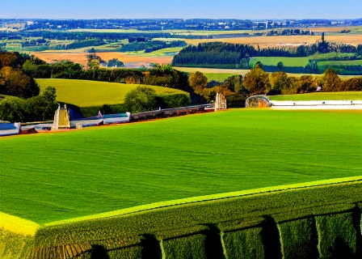
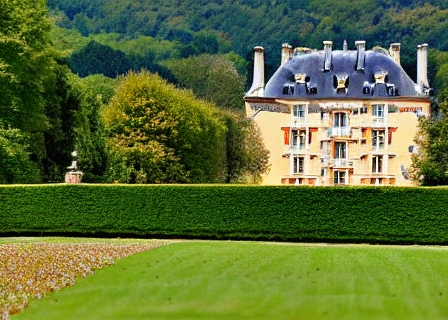

Nous sommes heureux de vous accueillir sur le site internet de l'office du tourisme de Roybon, en France. Vous y trouverez toutes les informations nécessaires pour planifier votre séjour dans notre belle région.
Notre région est connue pour sa beauté naturelle, ses châteaux historiques et ses activités de plein air. Nous avons des sentiers de randonnée pour tous les niveaux, des pistes cyclables, des lacs pour la baignade et la pêche, ainsi que des sites culturels tels que des musées et des châteaux.
Nous espérons que ce site vous aidera à planifier votre voyage et à découvrir tout ce que notre région a à offrir. Si vous avez des questions ou des commentaires, n'hésitez pas à nous contacter.